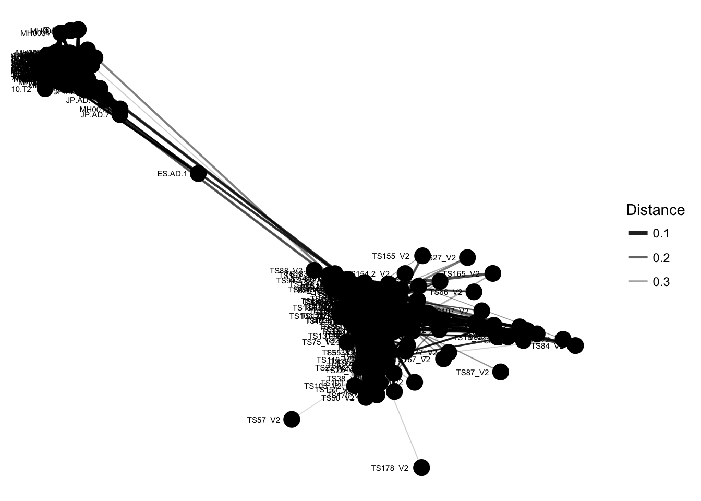
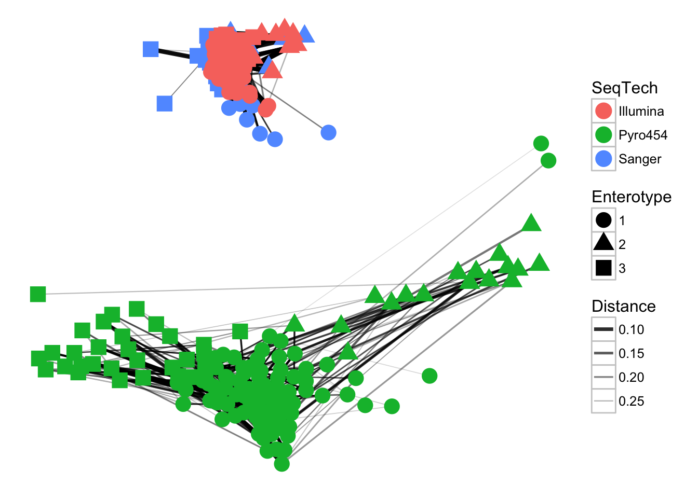
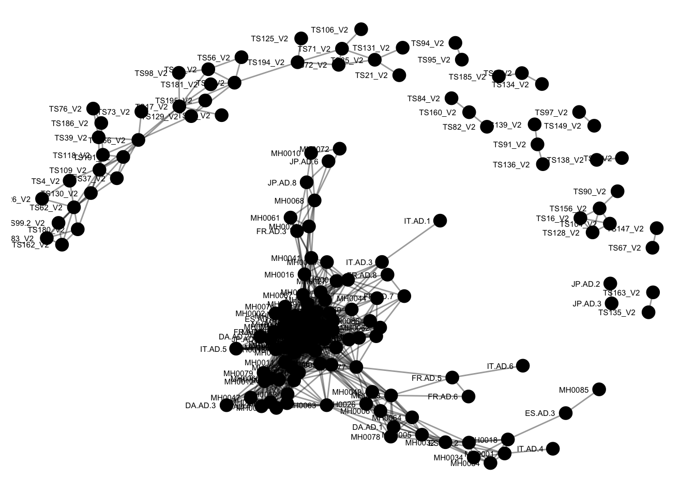
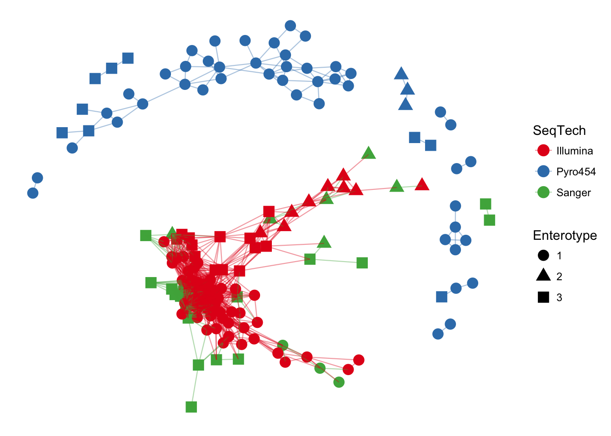
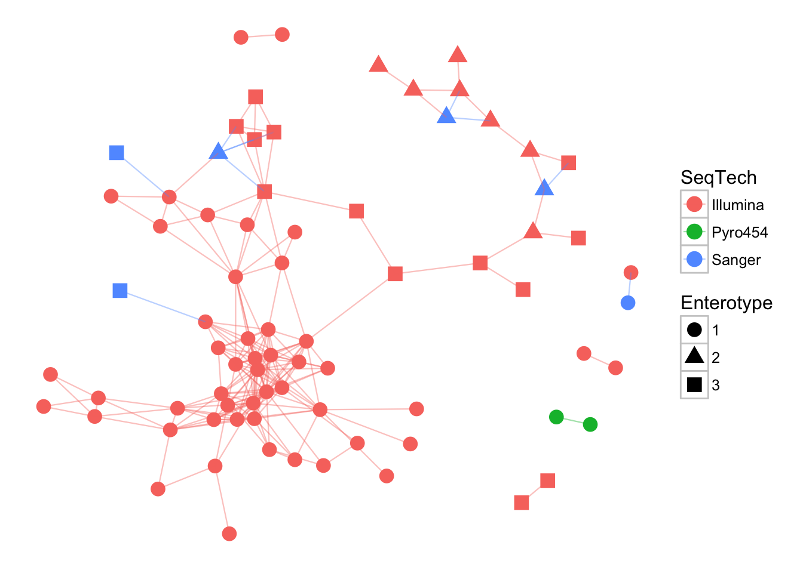
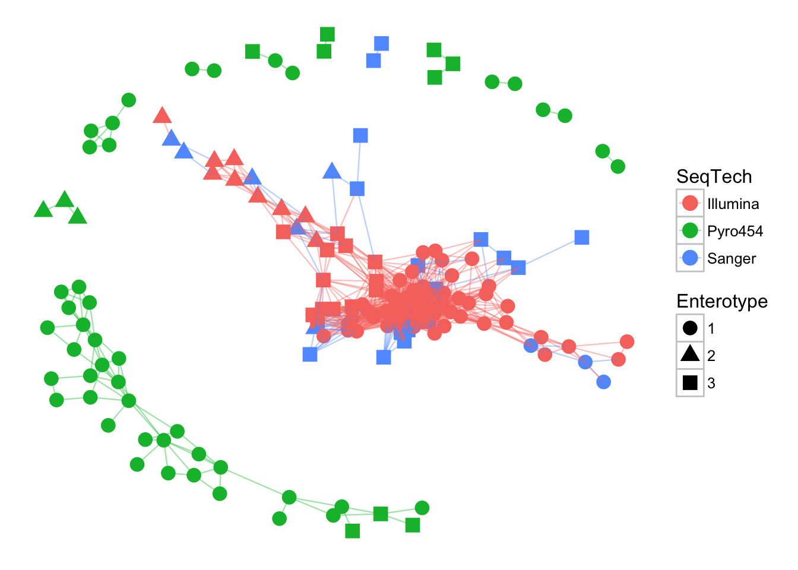

library(phyloseq); packageVersion("phyloseq")## [1] '1.22.3'packageVersion("ggplot2")## [1] '2.2.1'data(enterotype)There is a random aspect to some of the network layout methods. For complete reproducibility of the images produced later in this tutorial, it is possible to set the random number generator seed explicitly:
set.seed(711L)Because we want to use the enterotype designations as a plot feature in these plots, we need to remove the 9 samples for which no enterotype designation was assigned (this will save us the hassle of some pesky warning messages, but everything still works; the offending samples are anyway omitted).
enterotype = subset_samples(enterotype, !is.na(Enterotype))The newer plot_net function does not require a separate make_network function call, or a separate igraph object. For examples running the older plot_network function, which may provide some added flexibility with igraph objects, see the plot_network section later.
Try plot_net with the default settings.
plot_net(enterotype, maxdist = 0.4, point_label = "Sample_ID")
The previous graphic displayed some interesting structure, with one or two major subgraphs comprising a majority of samples. Furthermore, there seemed to be a correlation in the sample naming scheme and position within the network. Instead of trying to read all of the sample names to understand the pattern, let’s map some of the sample variables onto this graphic as color and shape:
plot_net(enterotype, maxdist = 0.3, color = "SeqTech", shape="Enterotype")
In the previous examples, the choice of maximum-distance and distance method were informed, but arbitrary. Try what happens when maxdist value is decreased (hint: this will usually decrease the number of edges in the network).
Create an igraph-based network based on the default distance method, “Jaccard”, and a maximum distance between connected nodes of 0.3.
ig <- make_network(enterotype, max.dist=0.3)Now plot this network representation with the default settings.
plot_network(ig, enterotype)## Warning: attributes are not identical across measure variables; they will
## be dropped The previous graphic displayed some interesting structure, with a major subgraph comprising a majority of samples. Furthermore, there seemed to be a correlation in the sample naming scheme and position within the network. Instead of trying to read all of the sample names to understand the pattern, let’s map some of the sample variables onto this graphic as color and shape:
plot_network(ig, enterotype, color="SeqTech", shape="Enterotype", line_weight=0.4, label=NULL)## Warning: attributes are not identical across measure variables; they will
## be dropped
In the previous examples, the choice of maximum-distance and distance method were informed, but arbitrary. Let’s see what happens when the maximum distance is lowered, decreasing the number of edges in the network
ig <- make_network(enterotype, max.dist=0.2)
plot_network(ig, enterotype, color="SeqTech", shape="Enterotype", line_weight=0.4, label=NULL)## Warning: attributes are not identical across measure variables; they will
## be dropped
Let’s repeat the previous exercise, but replace the Jaccard (default) distance method with Bray-Curtis
ig <- make_network(enterotype, dist.fun="bray", max.dist=0.3)
plot_network(ig, enterotype, color="SeqTech", shape="Enterotype", line_weight=0.4, label=NULL)## Warning: attributes are not identical across measure variables; they will
## be dropped